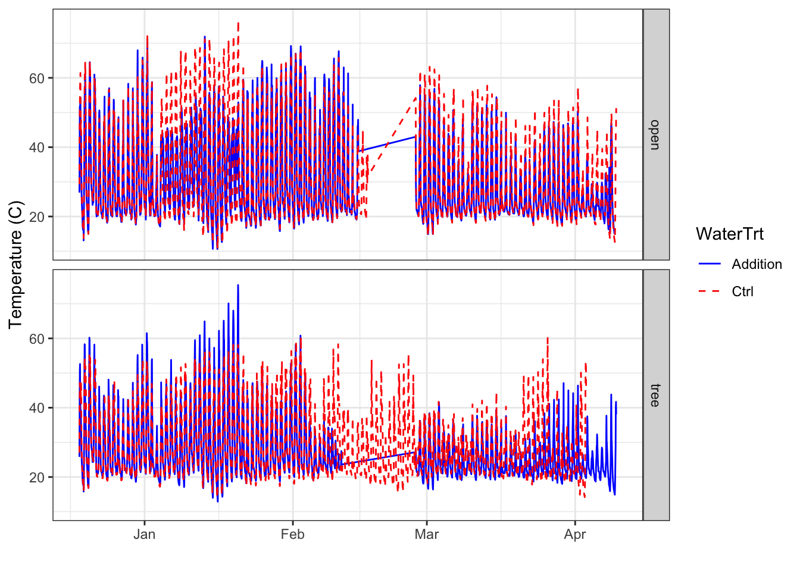

Data compilation of Kestrel data from Ongava for the decomposition experiment (2024-2026)
Overview
This script reads in csv files from individual Kestrel loggers, merges the files, and synthesizes the data.
Created January 24, 2025 Heather Throop
To run this code, all raw Kestrel files should be placed within the “L0” folder for this project on Dropbox. This code pulls data from the Dropbox folder (currently mapped to HT’s local drive as API token for Dropbox folder pull not working).
Install Packages
library(here) # v. 0.1
here() starts at /Users/hthroop/Documents/GitHub/OngavaDecomp
library(stringr) # v. 1.2.0library(purrr) # v. 0.2.3library(tidyverse)
── Conflicts ────────────────────────────────────────── tidyverse_conflicts() ──
✖ dplyr::filter() masks stats::filter()
✖ dplyr::lag() masks stats::lag()
ℹ Use the conflicted package (<http://conflicted.r-lib.org/>) to force all conflicts to become errors
library(scales)
Attaching package: 'scales'
The following object is masked from 'package:readr':
col_factor
The following object is masked from 'package:purrr':
discard
library(lubridate)
Display information about package versions in use when this code was run.
Note that the “more columns than column names” error is likely to happen. Find the offending file (use the last line of code in this chunk to do so) and delete extra columns to the right of the data.
Much of this code is based on the commentary from: https://aosmith.rbind.io/2017/12/31/many-datasets/
# list all files to read in### Note that this reference from Heather's laptop and may need to be changed for a different machineallfiles <-list.files(path =file.path("/Users/hthroop/ASU Dropbox/Heather Throop/DERT (ThroopLab) ASU/Lab Data & Metadata Archives/OngavaDungDecay/MicroclimateData/L0"), pattern ="\\.csv$", # Ensure proper regex for .csv files full.names =TRUE)# reading and extract loggerIDread_fun =function(path) { test =read.csv(path, skip =5,header =FALSE,col.names =c("datetime", "temperature", "RH", "heatindex", "dewpoint", "datatype") ) allnames =str_split( path, pattern ="/", simplify =TRUE) test$loggerID =str_extract(allnames[, ncol(allnames)], pattern ="2[0-9][0-9][0-9][0-9][0-9][0-9]") #extract the loggerID from the file name and add as a column test$RH <-as.numeric(as.character(test$RH)) test$heatindex <-as.numeric(as.character(test$heatindex)) test$dewpoint <-as.numeric(as.character(test$dewpoint)) test$temperature <-as.numeric(as.character(test$temperature)) test$loggerID <-as.numeric(as.character(test$loggerID)) test}# Line below is useful for testing if logger name is being assigned# change the number in brackets to check show the top section of each file#read_fun(allfiles[5]) # use to test the function on an individual file
Read in and Combine Files
combined_kestrel_notcleaned =map_dfr(allfiles, read_fun) # combine all the files
Warning in .f(.x[[i]], ...): NAs introduced by coercion
Warning in .f(.x[[i]], ...): NAs introduced by coercion
Warning in .f(.x[[i]], ...): NAs introduced by coercion
# check that we have the right number of loggers in the filecombined_kestrel_notcleaned |>group_by(loggerID) |>summarize(n =n())
# Add in microsite and block information### pulls in file with loggerID information ("KestrelLoggerAssignments")df_loggers <-read.csv("https://www.dropbox.com/scl/fi/25mbe4f5g30nbrgfwn1of/KestrelLoggerAssignments.csv?rlkey=d2djvhf8jkq3hpv7yvoez2zoy&dl=1", header =TRUE)df_loggers$loggerID <-as.numeric(df_loggers$loggerID)combined_kestrel_notcleaned <- combined_kestrel_notcleaned |>left_join(df_loggers, join_by(loggerID))#save the output as a .csv file - this is the combined L0 datawrite.csv(combined_kestrel_notcleaned, file =file.path("/Users/hthroop/ASU Dropbox/Heather Throop/DERT (ThroopLab) ASU/Lab Data & Metadata Archives/OngavaDungDecay/MicroclimateData/L1", "Ongava_kestrel_L0.csv"))
L1
Time formatting
Check that the time column is populated for all loggers. If not, the format might be incorrect - sometimes Kestels are set to send the datetime output in different formats.
# make a new file for messing around with date-time formatscombined_kestrel_cleaning <- combined_kestrel_notcleaned # Initialize the 'time' columncombined_kestrel_cleaning$time <-NA# Try parsing with flexible parse_date_time functioncombined_kestrel_cleaning$time <-parse_date_time( combined_kestrel_cleaning$datetime, orders =c("mdy HM", "ymd HMS p"), # List of possible formatstz ="Africa/Johannesburg",quiet =FALSE# This will show warnings and errors if parsing fails)# Check if there are still NA values after parsingif (any(is.na(combined_kestrel_cleaning$time))) {cat("Some entries could not be parsed!\n")# Print rows where the time column is still NAprint(combined_kestrel_cleaning[is.na(combined_kestrel_cleaning$time),])}# Remove rows with NA time values (if any remain after conversion)combined_kestrel_cleaning <- combined_kestrel_cleaning[!is.na(combined_kestrel_cleaning$time), ]# Ensure the time is in 24-hour format (POSIXct will handle it correctly)combined_kestrel_cleaning$time <-as.POSIXct(combined_kestrel_cleaning$time, format ="%Y-%m-%d %H:%M:%S")# Round down to the nearest minute (sets seconds to :00)# Accounts for loggers that oddly start logging at :30combined_kestrel_cleaning$time <-floor_date(combined_kestrel_cleaning$time, unit ="minute")# remove any data before the deployment date# NOTE THAT THE DATE MAY NEED TO BE ADJUSTED - PLACE THE DESIRED START DATE BELOW#L1_kestrel_data <-combined_kestrel_notcleaned[combined_kestrel_notcleaned[["time"]] #>= "2024-12-18", ] #### added end point since one logger was left logging longer than the others (Januray 2025 - first download)L1_kestrel_data <- combined_kestrel_cleaning[ combined_kestrel_cleaning[["time"]] >="2024-12-18"& combined_kestrel_cleaning[["time"]] <="2025-01-14", ]# Check that all loggers are still presentL1_kestrel_data |>group_by(loggerID) |>summarize(n =n())
#save the output as a .csv filewrite.csv(L1_kestrel_data, file =file.path("/Users/hthroop/ASU Dropbox/Heather Throop/DERT (ThroopLab) ASU/Lab Data & Metadata Archives/OngavaDungDecay/MicroclimateData/L1", "Ongava_kestrel_L1.csv"))# check the data carefully to see if any additional cleaning is needed!
Individual Logger Plots
Below are separate plots for each logger (grouped by treatment). These are intended to check the data (e.g., gaps in logs for different loggers and correct number of loggers per site).
# Save the plot as a JPG in the "figs" folderggsave(filename ="figs/temperature_all_loggers.jpg", plot = p2, width =8, height =6, dpi =300)
L2: Treatment Means
Check that the tibble output after running this chunk looks reasonable. N should equal the expected number of loggers. There should be values for SD and SE, assuming that there is more than one logger for each time point.
# create df that condenses the multiple loggers per microsite and water treatment down to one mean value per hourL2_hourlymeans_df <- L1_kestrel_data |>group_by(Microsite, WaterTrt, time) |>summarize(N =sum(!is.na(RH)),mean_T =mean(temperature, na.rm=TRUE),sd_T =sd(temperature, na.rm=TRUE),se_T = sd_T /sqrt(N),mean_RH =mean(RH, na.rm=TRUE),sd_RH =sd(RH, na.rm=TRUE),se_RH = sd_RH /sqrt(N) )
`summarise()` has grouped output by 'Microsite', 'WaterTrt'. You can override
using the `.groups` argument.
Plots of hourly means
RH
# plots of hourly means by treatment - RHp3 <- L2_hourlymeans_df |>ggplot(aes(x=time, y=mean_RH, color = WaterTrt, linetype = WaterTrt)) +geom_line() +theme_bw() +ylab("Relative Humidity (%)") +xlab("") +facet_grid(Microsite ~ .) +scale_color_manual(values =c("Addition"="blue", "Ctrl"="red")) +scale_linetype_manual(values =c("Addition"="solid", "Ctrl"="dashed")) p3
# Save the plot as a JPG in the "figs" folderggsave(filename ="figs/RH_by_trt.jpg", plot = p3, width =8, height =6, dpi =300)
Temperature
# plots of hourly means by treatment - temperaturep4 <- L2_hourlymeans_df |>ggplot(aes(x=time, y=mean_T, color = WaterTrt, linetype = WaterTrt)) +geom_line() +theme_bw() +ylab("Temperature (C)") +xlab("") +facet_grid(Microsite ~ .) +scale_color_manual(values =c("Addition"="blue", "Ctrl"="red")) +scale_linetype_manual(values =c("Addition"="solid", "Ctrl"="dashed"))p4

# Save the plot as a JPG in the "figs" folderggsave(filename ="figs/temperature_by_trt.jpg", plot = p4, width =8, height =6, dpi =300)